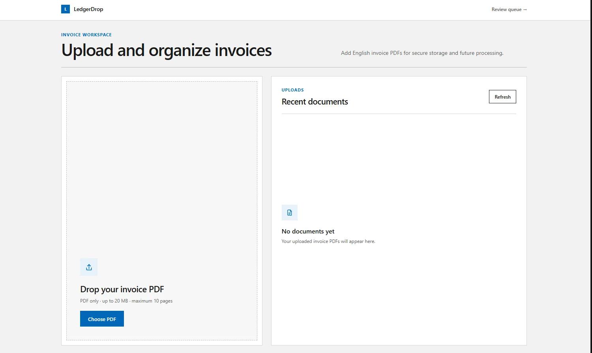

← All work
LedgerDrop
An invoice-processing app. It extracts structured data from uploaded PDF invoices and checks it automatically; results it isn't sure about go to a person for review.
- Role
- Full stack developer
- Team
- Solo
- Status
- Live
- Links
- Live app ↗ · Code ↗

Overview
- You upload an invoice PDF, the backend extracts the data from it and validates it.
- Invoices that pass go through; uncertain ones go to a review screen, where the data can be approved, rejected or corrected.
What I built
- An async FastAPI pipeline that processes the uploaded invoices, using the OpenAI API for the extraction.
- A Next.js review screen for approving, rejecting or correcting the data, with an audit trail of the changes.
- PostgreSQL with SQLAlchemy for the data, Cloudflare R2 for file storage, and deployment with Docker on Render.
Stack
- FastAPI
- SQLAlchemy
- PostgreSQL
- Next.js
- TypeScript
- Docker
- Render
- Cloudflare R2
- OpenAI API